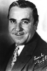
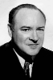

Country:United States, 62 minutes
Spoken languages:
Genres:Mystery
Director(s):William Nigh
Writer(s):Edgar Wallace, Wellyn Totman
Video Codec:Unknown
Number: 1762


Certification:
Storyline:
Police try to solve a murder on board an ocean liner.
Cast:  

Medium: Original DVD,
Comments: Part of: Mystery Classics - 50 Movie Pack
Loaned: No
Aspect ratio: Unknown